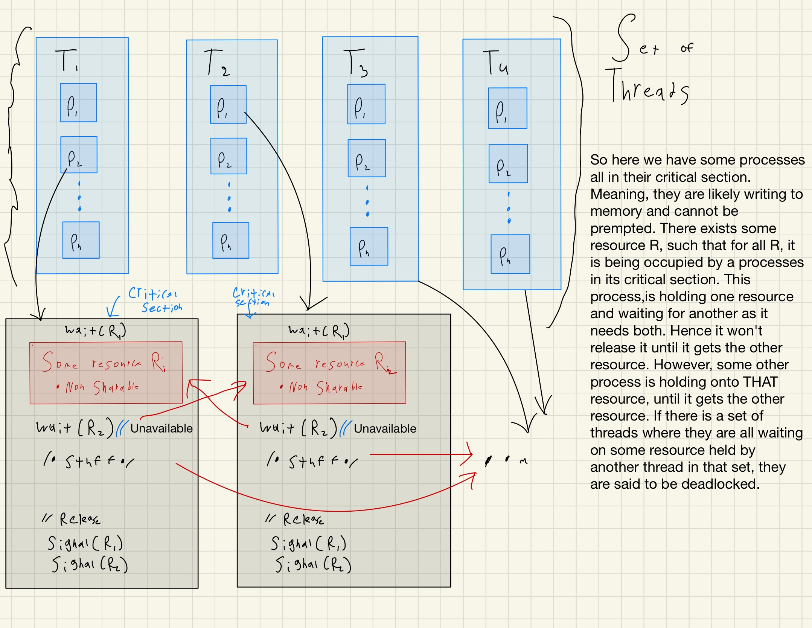

A system is composed of a finite number of resources that are to be distributed among competing threads. These resources can be partitioned into various types or classes, each having a number of identical instances, such as CPU cycles, files, and I/O devices (e.g., network interfaces, DVD drives).
If a thread requests an instance of a resource type, allocating any instance of that type should satisfy the request. If not, the instances are not identical, and the resource type classes are not defined properly.
Synchronization tools like mutex locks and semaphores are also considered system resources and are common sources of deadlock. Each instance of a lock is typically assigned its own resource class as it is usually associated with a specific data structure.
Threads may use resources from other processes (e.g., via interprocess communication), which can also result in deadlock, but such deadlocks are not the concern of the kernel.
A thread must request a resource before using it and must release the resource after using it. The number of resources requested cannot exceed the total number of resources available in the system.
Under normal operation, a thread may utilize a resource in the following sequence: Request (the thread requests the resource and waits if it cannot be granted immediately), Use (the thread operates on the resource), and Release (the thread releases the resource).
Request and release of resources may be system calls, such as request() and release() of a device, open() and close() of a file, and allocate() and free() memory system calls.
A system table records whether each resource is free or allocated and, if allocated, the thread to which it is allocated. If a thread requests a resource currently allocated to another thread, it can be added to a queue of threads waiting for this resource.
Deadlock in Multithreaded Applications
A set of threads is in a deadlocked state when every thread in the set is waiting for an event that can only be caused by another thread in the set. The events are mainly concerned with resource acquisition and release.
The resources can be logical (e.g., mutex locks, semaphores, files) or other types of events like reading from a network interface or using IPC (interprocess communication) facilities.
An example illustrating a deadlocked state is the dining-philosophers problem, where resources (chopsticks) are grabbed by philosophers, and each is then blocked waiting for the next chopstick to become available.
Developers of multithreaded applications must be aware of the possibility of deadlocks and pay careful attention to how locks are acquired and released to avoid it.
8.3 Deadlock Characterization
Deadlock is a challenging situation in multithreaded programming, especially when using mutex locks. It is crucial to understand the conditions that characterize deadlock to manage resources effectively in a multiprogramming environment.
Deadlock can occur when several threads compete for a finite number of resources, leading to a situation where a waiting thread can never change state because the resources it has requested are held by other waiting threads.
Deadlock is defined as a situation where every process in a set of processes is waiting for an event that can only be caused by another process in the set.
It is essential to look closely at the conditions that characterize deadlock to manage resources effectively in a multiprogramming environment.
Deadlock can occur if the following four conditions hold simultaneously in a system:
Mutual Exclusion: At least one resource must be held in a nonsharable mode, meaning only one thread at a time can use the resource. If another thread requests that resource, the requesting thread must be delayed until the resource has been released.
Hold and Wait: A thread must be holding at least one resource and waiting to acquire additional resources that are currently being held by other threads.
No Preemption: Resources that have already been allocated cannot be preempted.
Circular Wait: A set of threads exists such that each thread in the set is waiting for an event that can only be caused by another thread in the set.
These conditions are integral to understanding and managing deadlock situations, ensuring that systems can avoid or handle them effectively.
It's crucial to note that all four conditions must be present simultaneously for a deadlock to occur.

8.3.2 Resource-Allocation Graph
If a resource-allocation graph does not have a cycle, then the system is not in a deadlocked state.
If there is a cycle, then the system may or may not be in a deadlocked state.
Deadlocks can be handled using three general approaches: ignoring the problem and pretending that deadlocks never occur, using a protocol to prevent or avoid deadlocks, or allowing the system to enter a deadlocked state, detect it, and recover.
Most operating systems, including Linux and Windows, use the first solution, relying on kernel and application developers to handle deadlocks using approaches outlined in the second solution.
Some systems, such as databases, adopt the third solution, allowing deadlocks to occur and then managing the recovery.
Deadlock prevention provides methods to ensure that at least one of the necessary conditions cannot hold. These methods prevent deadlocks by constraining how requests for resources can be made.
Deadlock avoidance requires the operating system to be given additional information in advance concerning which resources a thread will request and use during its lifetime.
If a system does not employ either a deadlock-prevention or a deadlock-avoidance algorithm, then a deadlock situation may arise. In this environment, the system can provide an algorithm that examines the state of the system to determine whether a deadlock has occurred and an algorithm to recover from the deadlock.